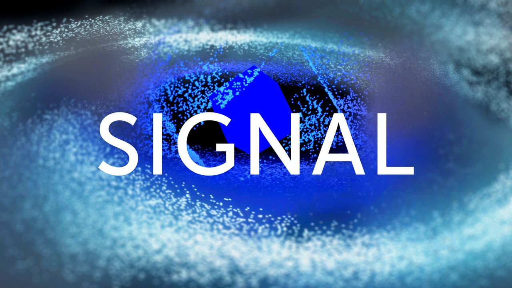

Направление SIGNAL
{kind=link}
Экосистема с годовым жизненным циклом, Signal Festival проводит седьмой сезон в крупнейшем арт-парке Никола-Ленивец. Сцена Signal. Хард-техно с максимальной отдачей от героя тяжеловесных рейвов из Италии — Rian Wood в рамках саб-ивента Monasterio, проект Phurpa — ритуальная музыка буддистской традиции Бон в формате AV-лайва, резидент Popoff Kitchen Roma Ptashenko и представительница новой европейской школы хард-транса Varya Karpova. Meadow. Howie Lee — эклектичный экспериментатор из Пекина и один из главных экспортеров аутентичного китайского саунда по всему миру, Kosaya Gora — совместный проект дивы новой электронной музыки Kedr Livanskiy и аудиовизуального художника Flaty и делирий, обрамленный электроникой тончайшей выделки, в исполнении группы 4 Позиции Бруно. Ключевая фигура румынской сцены продюсер Piticu выступит на Mobius. В этом году хостят сцену Flower гуру чилл-рейва Geju. Завершает волну казанский дуэт, покоряющий международную сцену, — Yung Acid.